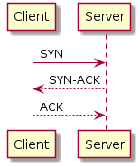
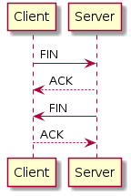

协议分层
- 应用层 Application
- 对应OSI协议Application、Presentation、Session三层
- 常见上层协议：HTTP、FTP、SMTP、TELNET
- 传输层 Transport
- 对应OSI协议Transport层
- 协议：
- TCP：（见下）
- UDP：不超时重传、不错误重传、不保证顺序
- 网络层 Internet
- 对应OSI协议Network层
- 协议：
- IP：（见下）
- ARP：IP地址到MAC地址转换
- DARP：（略）
- ICMP：发生错误时，错误信息封包传给主机；IP重定向报文；路由发现报文
- ping
- traceroute
- 利用IP协议的TTL实现
- 利用主机不可达和端口不可达区分
- 网络接口层 Network Interface
- 对应OSI协议Data Link、Physical两层
- 附加以太网部首
IP协议
- 附加IP部首
- TTL，生存周期，每路由一层减1，为0时丢弃
- 实现traceroute
- TTL，生存周期，每路由一层减1，为0时丢弃
- 路由顺序：
- TTL为0时丢弃
- 匹配主机
- 匹配同子网路由器
- 匹配同网号路由器
- 匹配默认路由器
- 不保证可达，需配合ICMP由上层实现可靠性
TCP协议
流量控制的思想可以用于上层应用的开发
- 附加TCP部首
- 可靠协议
- 合理分块
- 超时重发
- 校验和校验
- 发送确认
- 组装时排序
- 滑动窗口流控
- 建立连接，三次握手：
- 
- 断开连接，四次握手：
- 
- 流量控制
- 延迟发送
- 捎带ACK：延迟发送ACK
- Nagle算法：延迟发送数据
- 滑动窗口 rwnd：接收方缓冲区
- 拥塞窗口 cwnd：探测带宽上限
- 慢启动阶段（未超过门限 ssthresh）
cwnd *= 2
- 拥塞避免阶段（超过门限）
cwnd += 1
- 慢启动阶段（未超过门限 ssthresh）
- 延迟发送
- 超时重传
- 超时时间调整：简单的说，是一个涉及旧超时时间、新传输时间、经验系数、方差的函数
- 拥塞：某报文超时需要重传
ssthresh /= 2cwnd = 1- 进入慢启动阶段
- 快速重传：当收到3个重复ACK时（<3个，乱序是大概率事件；>=3个，丢包是大概率事件）
ssthresh /= 2cwnd = ssthresh- 进入拥塞避免阶段
- 快速恢复：（略）
- 其它计时器
- 坚持定时器：双方滑动窗口为0时的试探间隔，避免互相等待死锁
- 保活定时器：判断保持或断开半开放连接
- 2MSL定时器：端口可再次使用的计时器，在此期间，服务端可以重启而不报端口占用错误，但不可以建立连接